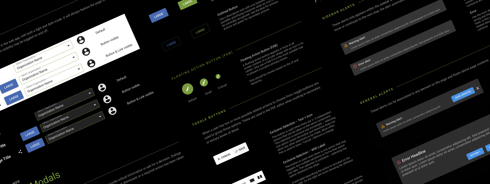
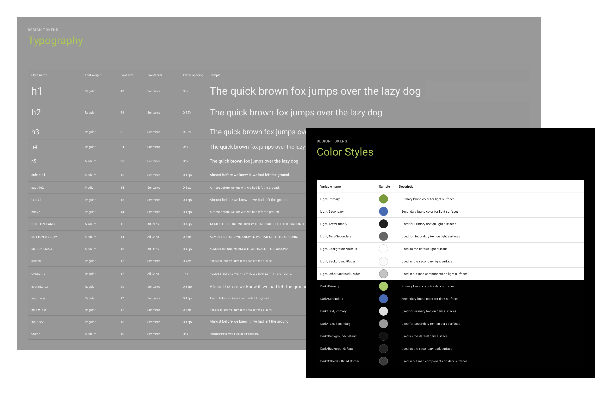

Pioneering the FieldAgent Design System
As the first UX/UI designer, I was tasked with establishing platform branding and creating the FieldAgent design system from scratch.
Disciplines
Design Systems
Product Strategy
Accessibility
Role
UI / UX Designer
Design System Owner
Timeline
10 Months
2022-2023
Tools
Figma
Figjam
Approach
Learning From Established Systems
I started at Figma’s design system conference, Schema.
I listened to some of the best design system creators talk about different aspects of creating, maintaining, and overhauling design systems. I had a ton of fun and learned so many invaluable bits of knowledge about design systems.
These are a few of my key takeaways from Schema:
- Design Tokens are the single source of truth to name and store a design decision.
- Utilizing Design Tokens in a Design System to maintain design consistency
- How to structure our design system in a performant way
- Prioritizing consumability of the system over easy maintenance of the system
Process
Managing Complexity
In order to manage the size and complexity of our design system, I divided the system into three atomic design libraries.
The Typography + Color and Iconography Libraries support the largest part of our design system, our Component Library.
Additionally, splitting up the three libraries of the system decreases loading times and network strain caused by having one massive library.
Structure
Color + Typography Library
This Library creates the base for our Design System and holds Color + Typography Design Tokens. These Tokens are used throughout our libraries, designs, and in development to maintain design consistency. Design Tokens hold a design style and also documentation notes on how the individual Token should be used.
Color Design Tokens for both light and dark modes have both been verified for accessibility when used with background color tokens of the same type.
This aids in design work and maintaining accessibility in our products, ensuring that designs are accessible without relying on the designer or developer to validate.
Additionally, I chose Roboto as the font for our platform due to its high level of readability and accessibility for all users; in addition to its plethora of font weights.

Structure
Iconography Library
The Iconography Library contains all of the icons used throughout the FieldAgent experience.
The Icons are created in their own library so they are easy to swap instances and component overrides, making for a better design system experience.

Structure
Component Library
The Component Library is the largest and most used library in the system. It was by far the biggest lift of the project and took the longest amount of time. The Component Library utilizes Design Tokens from the other two Libraries to create components structured like an atom, using with smallest molecules being Design Tokens and breaking up each component to build the smallest parts first, then combine to form a component (the atom)
This means that, for example, a button uses styles from the color, typography, and iconography libraries - and in turn is used by larger parent components, like a modal window. By building the core libraries first, and then the smallest components, changes are simple but easy to control unwanted changes by restricting access to these core libraries.
Maintenance
Maintaining the System
Caring for a Design System and maintaining it over time is just as important as creating it in the first place. An important part of this is thoroughly vetting additions to the design system to maintain integrity of the design system and manage unnecessary expansion.
This means that components only used on one page or in a singular instance were not added to the design system.
Results
Results of Implementing the FieldAgent Design System
The implementation of the design system was a huge success. Not only did it improve our speed and consistency in mockups, but it made the onboarding experience for new team members much easier. The team has saved countless hours of tedious work because we are able to reuse components from the library and adhere to established design guidelines.